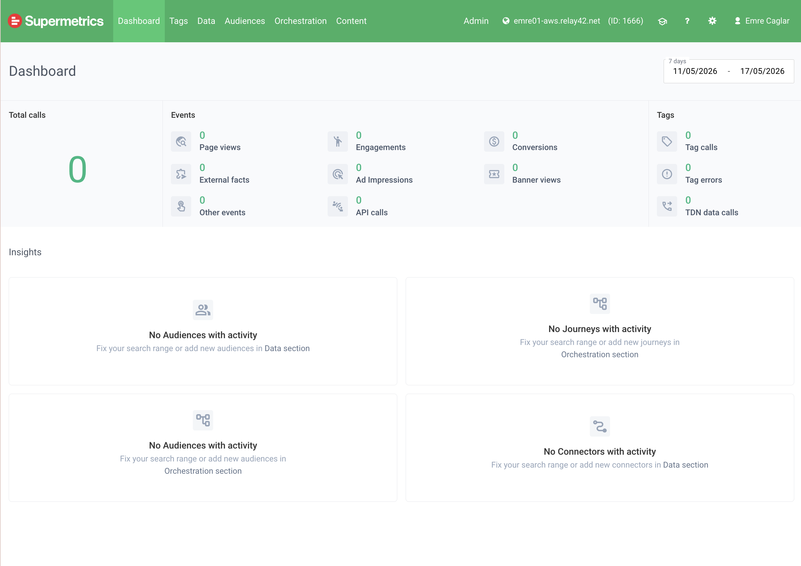
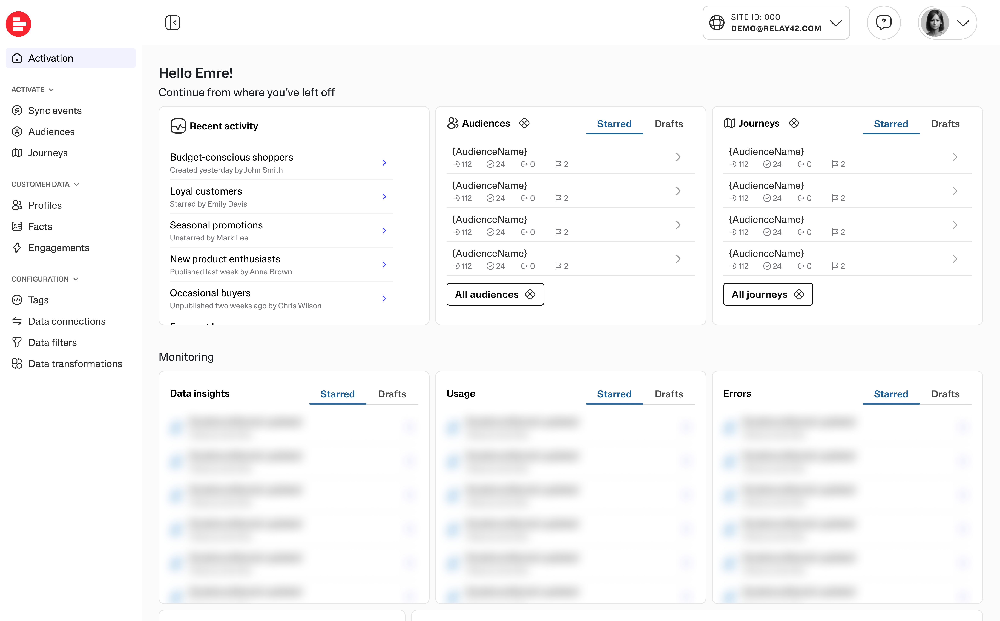
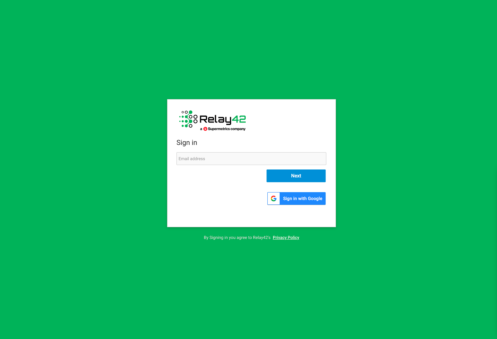
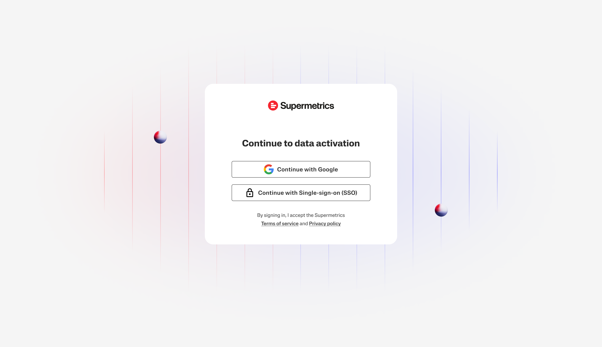
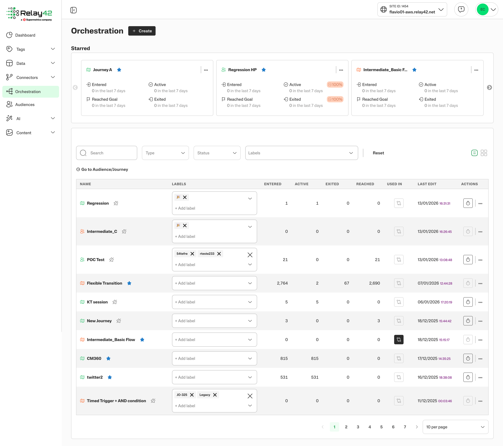
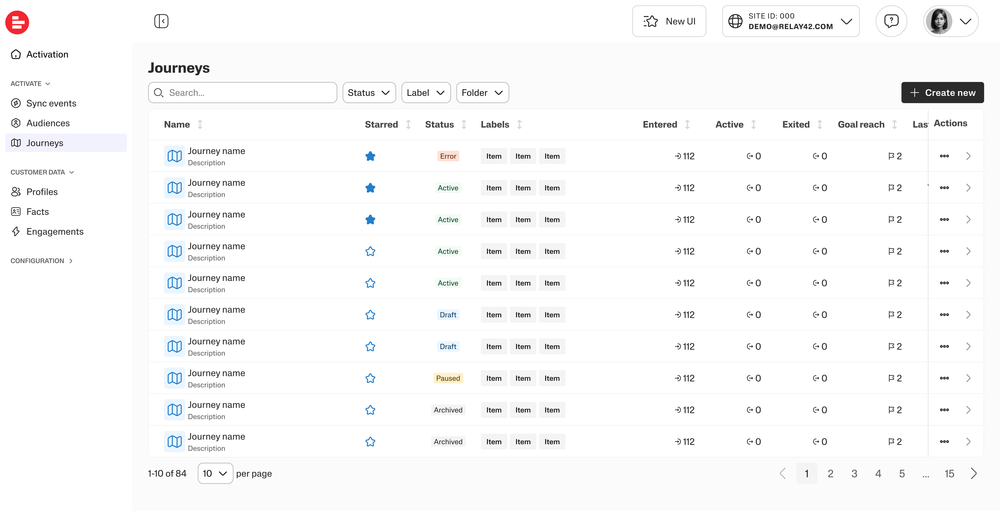
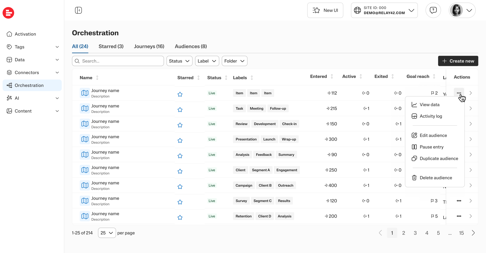
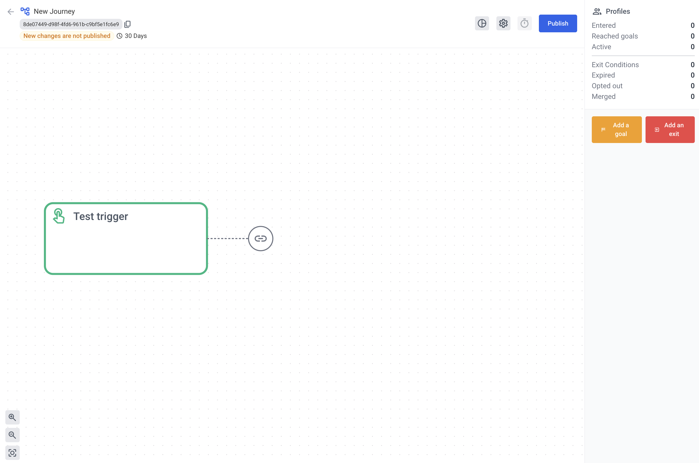
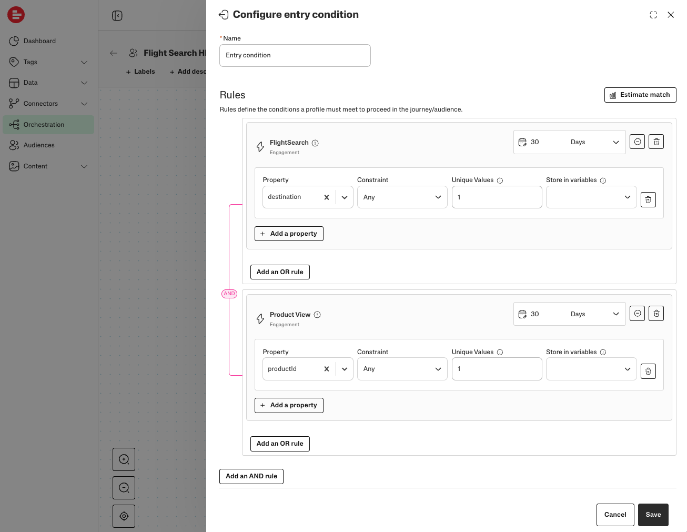
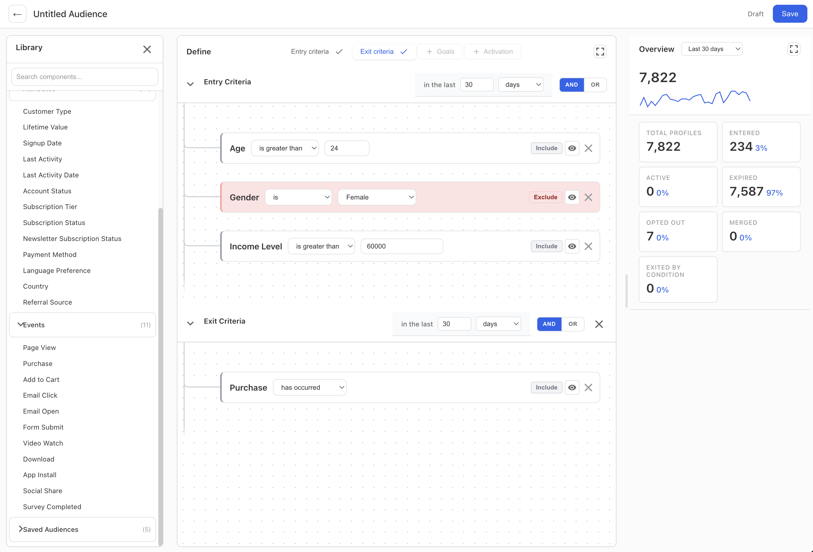

In 2025, Supermetrics acquired Relay42, a Customer Data Platform used by enterprise brands to collect profile and behavioural data, build audiences, orchestrate customer journeys, and activate campaigns across ad platforms. The technology was strong. The business model wasn't where Supermetrics needed it to be.
Relay42 had built its customer base on a service model: a small number of large enterprise accounts, each onboarded and managed by consultants. The platform assumed expert operators. Configuration required specialist knowledge. There was no meaningful self-serve path. For a company whose strategic direction was moving up-market while expanding self-serve reach, this was the central problem.
I moved to the Data Activation team in August 2025 as the principal designer, and effectively the first Supermetrics designer ever embedded in the acquired product. I came in knowing the Hub well but no longer responsible for it, knowing nothing about CDPs, and tasked with integrating the two.
Context
The situation I walked into
The Relay42 platform had its own design language, its own information architecture, its own mental models. It looked and felt like a different product, because it was one. There was no Supermetrics design system adoption, no alignment with Hub patterns, no shared component library. The two platforms existed independently, connected only by brand.
The immediate problem this created was practical: customers who used both Supermetrics and Relay42 had to context-switch between two entirely different experiences. But the deeper problem was strategic. If Data Activation was going to be a self-serve product, if a marketing team with no data engineer and no consultant was going to use it, it needed to feel learnable. The current product, to put it plainly, did not.
The domain challenge
CDPs are not a natural extension of marketing analytics tools. The underlying concepts: profile resolution, event ingestion, facts and engagements, audience segmentation, journey orchestration. All new territory for most Supermetrics users, and new territory for me.
I spent the first weeks in the product, in the Relay42 team's documentation, in calls with consultants who ran implementations, and in the code. Understanding what "a stream" meant technically, how profile data was structured, what made an audience definition valid or invalid, this had to come before any design decisions.
One framing that helped: the product wasn't just an activation tool, it was a layer on top of customer data that let teams use that data in different ways, for analysis, for targeting, for automation. Getting the conceptual model right was a prerequisite for getting the UX right.
Who we're designing for
Early in the project I mapped the user landscape with the Relay42 product team. The result was a unified archetype matrix: three personas crossed with three engagement models. It shaped every subsequent design decision: which workflows to simplify first, where a consultant's institutional knowledge needed to become in-product guidance, and what "self-serve" actually means for different users.
Three personas × three engagement models. The Self-Serve column defines the design target.
| Active / Hands-On | Passive / Service-Led | Self-Serve (Future) | |
|---|---|---|---|
| Practitioner |
Behavior In the tool daily. Technically proficient, explores features proactively. Needs Working core UX, efficiency, contextual help. JTBD "Help me work faster and implement better campaigns." Pain points Slow workflows for repeating tasks. Needing to wait for consultant validation on complex ideas. |
Our consultant is the primary hands-on user in this model. The client's practitioner has minimal to no direct platform engagement. |
Behavior Eager to learn but time-poor. A marketing generalist, not a specialist. Needs Guided workflows, in-app validation, easy reporting tools. JTBD "Help me launch effective campaigns quickly and prove their value to my boss." Pain points Fear of making a mistake, technical setup, not knowing where to start. |
| Manager |
Behavior Dips in to view dashboards. Works closely with practitioners and consultants. Needs High-level dashboards, performance trends, insights to guide team strategy. JTBD "Give me the data I need to make smart strategic decisions." Pain points Hard to explore further detail; difficulty connecting platform activities to team KPIs. |
Behavior Main point of contact for our consultant. Rarely logs in. Needs Executive summaries, compelling success stories for internal meetings. JTBD "Deliver the results we agreed upon and give me the materials I need to report success upwards." Pain points Lack of direct visibility; reliance on consultant reports. |
Behavior Self-serves reports and dashboards to check team progress. Needs Simple, intuitive, shareable reporting that demonstrates ROI. JTBD "Let me quickly see if our investment is paying off and how my team is performing." Pain points Reports that are hard to configure or understand without expert help. |
| C-Level |
Behavior No direct product engagement. May see high-level dashboards presented by their team. Needs Clear connection between the platform and core business KPIs. JTBD "Justify the ongoing investment in this platform." Pain points Reports that don't speak the language of business (revenue, customer lifetime value). |
Behavior Engages during contract renewal or quarterly business reviews. Needs Confidence that the strategic partnership is delivering significant value. JTBD "Confirm that this strategic partnership is a wise use of company resources." Pain points A relationship that feels purely tactical rather than strategic. |
Behavior Reviews summary reports from their manager. Needs To see that the team is becoming more effective and efficient through the tool. JTBD "Show me that this tool is a force multiplier for my marketing team." Pain points The tool's value is unclear or not easily quantifiable. |

Key Insights
Key Challenges
UX Opportunities
Design Drivers
Visual Integration
The first structural intervention was applying Supermetrics' Metri design system to the rebuilt V2 pages of the Activation Hub. This wasn't purely cosmetic. Common components (navigation, tables, form patterns, modals, error states) now behave consistently with the Hub. A user who knows how to use Supermetrics has a recognisable framework when they enter the activation platform.
The remaining pages in the product are iframed from the legacy system. The design work is ongoing; each page rebuilt in V2 closes that gap.
Before
After


Before

After

Orchestration
The Activation Hub combined journeys and audiences on a single page with poor space efficiency. Asset lists were hard to scan, actions were buried, and the page tried to serve too many contexts at once. I proposed a new information architecture with separate focused pages, and customisable, info-dense tables built on the Metri design system.
The work split into two parallel tracks. The design system track delivered the new table component. I built coded prototypes with multiple variants covering sorting, filtering, pagination, empty states, error states, and loading behaviour, which were then integrated into Metri with a minor refactor. The IA track proposed separate pages for journeys and audiences, each with purpose-built views.
I proposed a middle phase so the design system work and IA work could proceed in parallel. The table redesign shipped first on the existing unified page, while the page separation followed. This allowed us to move faster: the team wasn't blocked waiting for the full IA change before seeing improved tables in production.
Released to Beta in January 2026, initially to the activation consultancy team, IG Group, and Vattenfall.
Before

After


Table system
Tables are the most-used component in the Activation Hub: journey lists, audience lists, activity logs, connector status, and data previews all use the same table primitive. The redesign unified these under a single table system built on Metri, covering sorting, filtering, pagination, inline actions, empty states, error states, and loading behaviour.
Table system: Figma exploration of unified table variants across the Activation Hub.
Journey Builder
The old journey builder was a visual canvas that worked well conceptually, but it was custom-built, janky, and not very discoverable, with many icon buttons without explanation, inconsistent interaction patterns, and a codebase that was difficult to extend.
I took a pragmatic approach: rather than rebuilding the canvas from scratch, I convinced the team to adopt ReactFlow, a mature open-source library. We evaluated it together with the developers and I built a UX prototype using actual ReactFlow components connected to the same backend, so the transition from prototype to production could be smooth.
The new ReactFlow canvas was implemented in less than two weeks. The previous custom canvas had taken more than four months to finalise. The prototype I built served as the direct specification. Developers could inspect the component structure, interaction patterns, and data flow rather than translating static designs.
Legacy journey canvas: custom-built, icon-heavy, limited discoverability.


Audience Builder
Audience definition in a CDP is not intuitive for most marketers. The combinations of profile attributes and behavioural events, entry and exit conditions, which data to trust. These are decisions that had previously required a consultant to translate between the customer's intent and the platform's logic.
I built the coded prototype to accept different sets of customer data from various verticals (airlines, hospitality, insurance) in JSON format, so during testing consultants could load their own datasets and see how the interface handled their actual day-to-day cases. I ran research sessions with five consultants (Aliina, Marion, Richard, Willem, and Valter, VP Product) using this prototype. Two things were immediately clear: what worked and what didn't.
Before

After

The left-side library and live readout were universally praised. Dragging data points directly from the panel into the rule builder felt natural; watching the profile count update instantly as rules were added made the impact of each condition legible in a way the old interface never had. Everyone wanted more of it.
"I'm loving this. I could cry because of this."
Aliina Neep, activation consultant, research session October 2025
"That's a massive improvement over a two-click calculation. It's a dynamic number."
Richard Hamlyn, activation consultant, research session October 2025
The central editor was the opposite: no clear hierarchy, no way to understand what was happening at a glance. The consultants confirmed it in practice. They could state what they wanted in plain language ("everyone who opened a cart in the last 30 days but didn't purchase") but couldn't reliably navigate the rule structure without hand-holding. The AND/OR switching was invisible. Negating a rule was invisible. The mechanism for checking the impact of a single rule was invisible. The information was there; nothing about the layout told you where to look.
"I have no idea what is happening here and what the hierarchy is honestly... this is quite messy."
Valter Andersson (VP Product), audience builder research session, October 2025
The redesign introduced a three-panel layout (Library, Define, and Overview) replacing the modal-driven configuration with a persistent workspace. The Library panel makes customer profile data browsable and searchable: Facts and Engagements organised into meaningful categories rather than hidden behind configuration modals. The Define area uses collapsible sections with clear visual grouping, prominent AND/OR controls, and explicit entry and exit condition separation. The Overview panel shows a live profile readout as a first-class element rather than a two-click calculation. A clear Audience → Goals → Sync → Analyze navigation gives new users a step-by-step mental model of the workflow, replacing the flat interface where the process wasn't visible.
Audience builder redesign: collapsible rule groups, live profile readout, prominent AND/OR controls.
Two things the redesign made prominent. First, data discoverability: customer profile data is the platform's most valuable asset, and the Library panel now surfaces it as a browsable, searchable catalogue organised by Facts (demographics, account attributes) and Engagements (purchases, page views, email interactions), rather than requiring users to know field names in advance. Second, the proposed Audience → Goals → Sync → Analyze flow makes each step in the audience lifecycle explicit and navigable, especially for new users who previously had no visibility into what came after defining entry criteria.
The research also surfaced how consultants actually use the product after publishing. The primary workflow isn't building new audiences. It's Monitor, Duplicate, Troubleshoot: diagnosing why an audience shrank, cloning it to test a hypothesis, checking what's being sent to connectors. That shaped how the view mode is being designed, as a troubleshooting interface first, not a summary screen.
Early customer response has been positive. After a direction review with IG Group, our CSM Vera Oliveira noted that the customer was happy with where we were heading, and called out the new audience builder as an important milestone for that relationship.
Agentic workflow
The search box in the Audience Builder side panel behaves differently depending on the input. When a user searches for a data field that exists exactly, it surfaces it. When no exact match is found, the interface automatically switches from keyword search mode to a prompt mode, showing an AI input that can interpret natural language queries against the field library.
No toggle, no mode switch, no explanation needed. The model is: if the structured path doesn't work, the conversational path appears. The transition is invisible because the user's intent didn't change.
Audience agent: AI-assisted rule building with natural language queries against the field library.
Self-serve data ingestion
The hardest design problem on the roadmap: how does a Supermetrics customer get their data into the Data Activation platform without a consultant?
The architectural decision, settled after significant cross-team debate, was a push model using Supermetrics' existing DWH transfer infrastructure, with a new UI layer inside the Hub to configure the stream. I designed the flow for this: a tab-separated layout under the Data Storage page that cleanly separates analytics and activation namespaces without creating a new product surface. The design deliberately reuses Storage components to reduce build time and maintain interface consistency.
Field mapper: human in the loop
Schema mapping, matching columns from a customer's source data to the activation platform's profile schema, is where most non-technical users stall. The field mapper includes an AI integration that suggests matches based on field names and types.
The design choice here was deliberate: the agent proposes, the user confirms. Each suggestion is displayed individually in-line with the field row, accepted or rejected one at a time, not applied in bulk. Schema decisions are hard to reverse once data is flowing; the friction is the point.
The prototype is built directly on the product codebase using a local development environment, proxied to the staging backend, so it uses real data and real API responses, not mocks. I also set up a local LLM server to prototype the agentic workflow: the AI agent in the field mapper works and interacts with the actual product, suggesting field mappings against live schema data.
The field mapper is now released as a Beta. The full self-serve ingestion path (source selection, authentication, field mapping to the activation schema, stream monitoring) is being built against these designs.
Field mapper: AI-suggested field mappings against a live staging environment with real customer data.
Beyond the Product
DesignOps and team building
In January 2026, I hired Siobhan Herne as Senior Product Designer on the Data Activation team, the first designer based in our Amsterdam office, where most of the Relay42 engineering and product team is located. Data Activation design had been a single-person effort across two platforms in two offices. Adding a designer embedded with the Amsterdam team removed a real distance penalty on feedback loops, prototyping speed, and relationship-building with the engineers who had built the original product.
To get her productive quickly, I built a Claude Code template that packages the full Metri design system library (components, tokens, usage patterns) as a starting context for any design session. A designer opening a new session already has the component constraints, naming conventions, and relevant prior decisions available without re-establishing them each time. Siobhan could start working on the connector setup flow with the same design system context I'd been building up over months, from day one.
Contributing to product strategy
The self-serve goal required more than a UX redesign. The product had been conceived as a monolith: you either had Data Activation or you didn't. That model doesn't work for self-serve at scale.
In a DM exchange with Valter Andersson (VP Product), I mapped out a tiered capability model:
"What I can see is that we take various assets out of R42's engine after the setup, rather than treating journey and activation as the main goals. A customer can have audiences in their plan, which means we let them explore customer profiles, build audiences and use them as dimensions in SM to refine their analysis, or stream them to ad platforms. Likewise with events. Then you have the main activation tier that enables journey orchestration. These can be separately monetized or tied in packs, a small e-commerce pack with predefined journeys for cart abandonment, etc."
Emre Caglar, DM to Valter Andersson (VP Product)
This framing (audiences and events as standalone value, journeys as the premium tier) has since shaped how the product's packaging and self-serve path is being thought about.
Early signal
The Beta release went to IG Group and Vattenfall as the first external customers. A validation session with IG produced the following assessment:
"The new setup makes audience creation significantly simpler. [...] The data model is more intuitive and cleaner."
Customer feedback shared by Vera Oliveira, #tmp-r42-ig-opportunity-bq, March 2026
Initial validation showed a 98% match rate between the Data Activation platform and the customer's own BigQuery, closing the data integrity gap that had been a concern during onboarding.
Reflections
This is a case study in progress. The self-serve goal isn't achieved yet, the ingestion flow is still being built, the Stream Editor Beta hasn't reached GA, and the audience and journey builder designs are still being iterated.
What I can point to is the direction set and the distance covered. When I joined, Data Activation was an acquired product with a different visual language, no Hub integration, no duplication capability, no self-serve entry point, and no Supermetrics designer. The V2 Activation Hub is in Beta. The Hub entry point exists. The data bridge is being built. The team has a second designer.
The customer landscape for Data Activation is different from anything else in this portfolio: very large accounts, long sales cycles, high stakes configurations. That changes what "good design" means. Speed and intuitiveness matter, but so does the confidence a consultant has when running a live demo, and the trust a brand puts in a platform managing their customer journey data. Those are the things the design work is trying to earn.